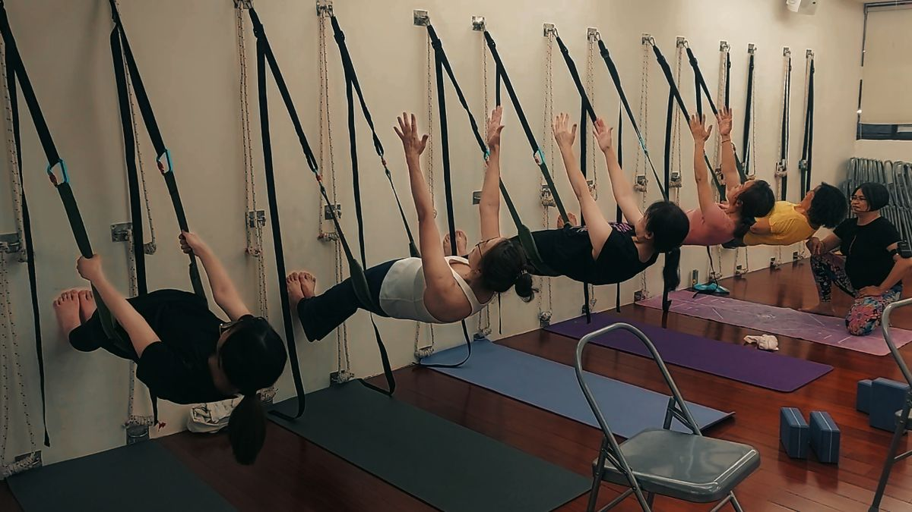
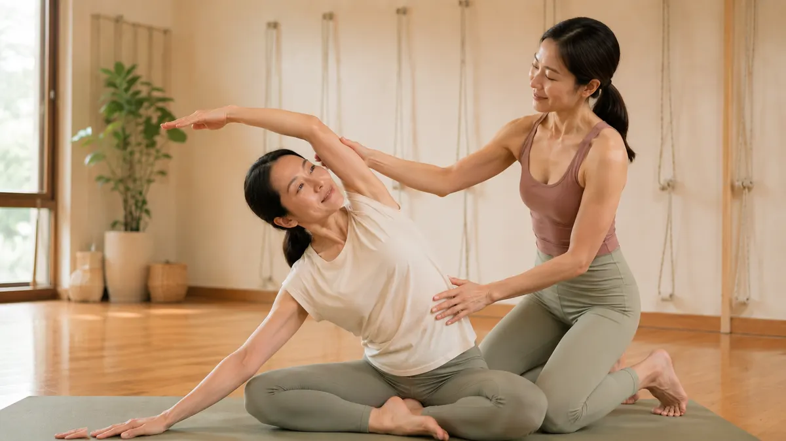
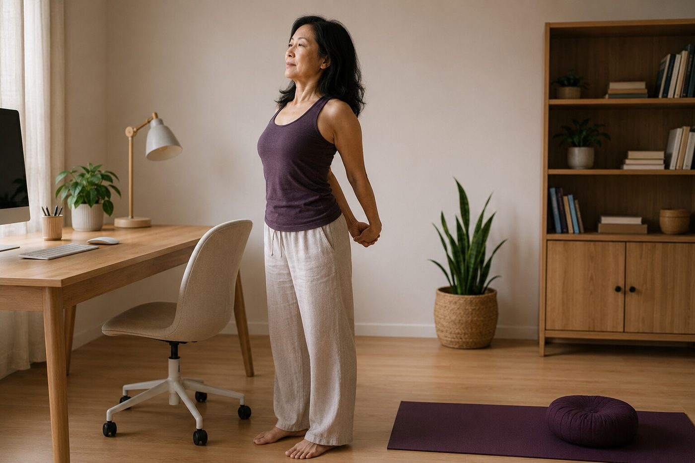

壁繩瑜伽能期待什麼？上課前先說清楚的 4 個界線

下課走出教室，當下站起來覺得輕鬆一些；隔天開了一早上的會，熟悉的緊繃又回來。你可能很想知道：這堂課到底該拿什麼來衡量？
壁繩瑜伽可用牆面支點協助學員比較不同站位、用力與動作幅度，課堂重點是累積能帶回日常的觀察。單堂感受會受當天活動與身體狀態影響，沒有每個人適用的外觀變化時程。初次體驗可先選一個生活動作，記下練習前後的感受，再決定是否繼續。
第一次壁繩課，可以用什麼判斷值不值得繼續？
挑一件你平常在意的事，例如起身時總想用手撐，或抬手時很容易聳肩。體驗後記下你能不能描述哪個支點、哪個幅度比較能掌握。想了解壁繩本身的原理和適用範圍可以回到支柱頁。想先知道這個情境是否反覆出現，也可以用體態訊號掃描整理幾天的感受。

👆 手機版可左右滑動
| 上課前常見期待 | 這堂課能先做什麼 | 課後可以怎麼判斷 |
|---|---|---|
| 一兩堂就能改變外觀 | 試一個你想看懂的日常動作，記下不同支點的感受。 | 觀察日常有沒有用得上這個方法。 |
| 躺著由繩帶或老師帶完整堂 | 老師協助調整支點，練習者自己控制幅度。 | 能否逐步說出自己在哪裡使力。 |
| 每週一堂能抵銷整週的久坐 | 挑一個能帶回工作或家裡的小調整。 | 留意它在實際生活是否可持續。 |
| 靠壁繩快速減重 | 先確認課堂內容與你重視的練習目標是否一致。 | 若目標主要是減重，另向合適的專業人員了解可行方式。 |
如果想快一點有感，應該換成一對一嗎？
可以先看你想解決的是上課節奏、需要較多個別動作回饋，還是單純想建立練習習慣。這些需求可對照第一次練習怎麼選團課、入門班或一對一；想確認費用、課型和時段，再看現有課程方式與費用。

本文是一般動作與課程資訊。若練習引發明顯不適，先停止並依情況尋求醫療專業評估。
常見問題
練幾堂就會看到外觀變化？
沒有通用堂數。初期可先比較同一個生活動作的感受與掌握度。
上課時可以完全放空，靠繩帶帶動嗎？
繩帶提供支點，學員仍要參與動作、掌握幅度並說出感受。
只上課、不改日常習慣，還有意義嗎？
課堂可以先學會辨認用力方式，之後可挑一個小調整帶回日常看看。
壁繩課適合當快速減重方案嗎？
壁繩課以動作觀察和支撐練習為主，先用你的主要目標比較不同選項。
現在有明顯疼痛，可以先試一堂嗎？
先暫緩課程，若症狀持續或加劇，請先尋求醫療評估。
先挑一個日常動作，看看它什麼時候最有感
可以從起身、抬手或久坐後的感受擇一，用免費體態訊號掃描整理。想多看幾天，也可以用免登入的觀察卡記下來。
開始免費體態訊號掃描 →想問老師一個問題？
可以直接開啟 LINE。下面兩個欄位都可以留空。